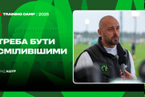

Футбольний клуб Полісся
«Полісся» — український футбольний клуб із Житомира. Заснований 1959 року. Припинив виступи в чемпіонатах України в 2005 році. Відновлений 2016 року як МФК «Житомир». На початку 2017 року повернув назву «Полісся».
«Полісся» — український футбольний клуб із Житомира. Заснований 1959 року. Припинив виступи в чемпіонатах України в 2005 році. Відновлений 2016 року як МФК «Житомир». На початку 2017 року повернув назву «Полісся».
Імад Ашур про матч з "Яблонцем" та підготовку команди на зборах:
